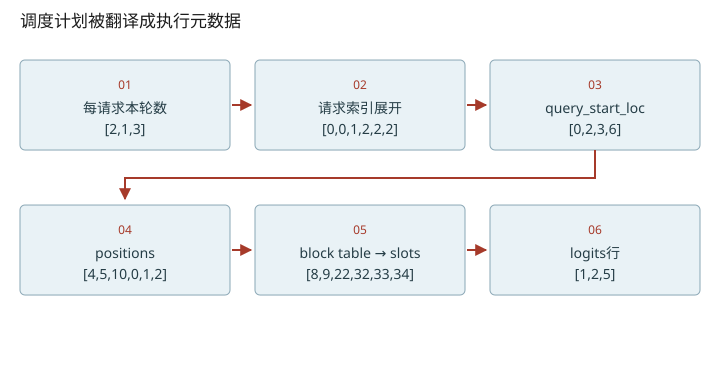
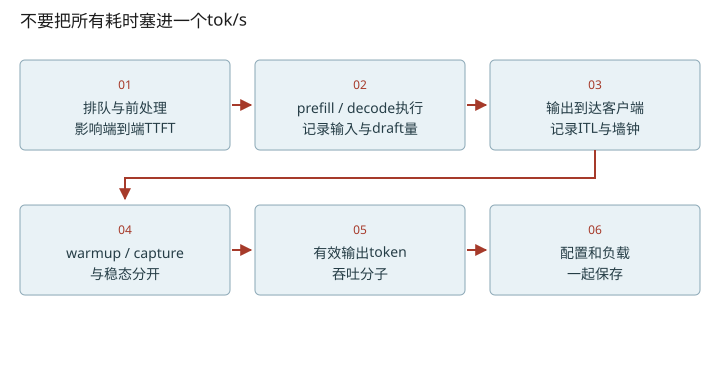

深入篇 29 / vLLM V1 运行时细节 · 2026-11-08
vLLM 执行层：六个token怎样变成三条请求的结果
手算GPU runner的关键数组，并建立不会混淆输入、输出、draft的测量口径。
手算GPU runner的关键数组，并建立不会混淆输入、输出、draft的测量口径。

六个位置的手算追踪
本轮query数=[2,1,3]，开始computed=[4,10,0]。req_indices=[0,0,1,2,2,2]；每请求局部offset=[0,1,0,0,1,2]；相加得positions=[4,5,10,0,1,2]。query_start_loc=[0,2,3,6]分割本轮输入；seq_lens=[6,11,3]说明各请求现在能读的上下文长度。二者同样是长度信息，语义完全不同。
B=4，A块表[7,2]、B块表[1,3,5]、C块表[8]，所以slot_mapping=[8,9,22,32,33,34]。常规logits_indices=[1,2,5]取每段末行；未完成prefill chunk还要discard其候选。异步spec下，GPU还可能先按上一轮接受数修正computed，并根据请求换序映射回前一轮状态，不能盲用CPU乐观账本作为最终位置。
FULL不是“仅decode”
runtime模式有NONE/PIECEWISE/FULL，策略还有FULL_DECODE_ONLY与FULL_AND_PIECEWISE。FULL表示以完整model forward为图捕获单位；backend支持时，non-uniform prefill/mixed也可能用FULL。输入形状变化通常通过分桶、padding与metadata处理。此提交的常见GPUModelRunner路径在_model_forward返回后选择sample_hidden_states，再compute_logits，所以不要靠“FULL”名字判断logits和采样一定在图内。设计文档是本节主源。
你的单卡实验应该留下什么
固定模型、权重dtype、输入/输出长度分布、并发、prefix复用模式、eager/graph与采样参数，一次只改一个变量。warmup、首次编译/图捕获与稳态分开记录。离线generate整段墙钟可算output tokens/s；没有逐token事件就无法从总耗时推导真实TTFT和ITL。若直接计时CUDA算子，必须用正确的同步或CUDA事件边界。
建议结果表记录：输入token数、真正提交的输出数、验证draft数、accepted draft数、墙钟、请求到达与输出事件、峰值显存、配置和commit。输出吞吐的分子应为已提交输出，不是本轮scheduled token。TPOT可按每请求(t_last−t_first)/(N_out−1)计算平均；N_out<2时不定义。ITL是相邻输出事件间隔的序列，不能只报一个均值掩盖尾延迟。
把维度变化拆到每一步
- 先定位本轮packed token行，再读q/k长度和slot_mapping。
- 图中的nano简化布局用于辨认索引职责；vLLM还需核对所选backend。
![去掉 padding 后的 packed token 轴。将长度3和2的两条请求从 padded [2,3,4] 收集到 [5,4]，逐行标出来源，并用 cu_seqlens=[0,3,5] 恢复请求边界。](../assets/diagrams/dim-packed.svg)

数值练习：先算，再核对
在纸上重建六个token的全部数组，然后运行 python labs/inference_lab.py packed。在原课07的WSL实验中使用 labs/benchmark-template.csv 保存数据；这里的CPU实验不会生成GPU性能结论。
闭卷检索
不要回看正文。答错后先解释原因，再重新打开这一课。
把结论落到源码
- 逐行对照_prepare_inputs中的重复request index和query_start_loc写入。
- 在_model_forward和compute_logits之间画一条边界，并核对设计文档中backend支持矩阵。
以下行号由本地 vendor 文件生成；上游链接固定完整 commit，离线摘录可直接打开。
- vllm-pack：vllm/v1/worker/gpu_model_runner.py L1923–2064 · 上游证据
- vllm-metadata：vllm/v1/worker/gpu_model_runner.py L2102–2196 · 上游证据
- vllm-slot：vllm/v1/worker/block_table.py L348–376 · 上游证据
- vllm-forward：vllm/v1/worker/gpu_model_runner.py L4136–4190 · 上游证据
- vllm-cudagraph-doc：docs/design/cuda_graphs.md L40–169 · 上游证据
优先阅读：vLLM CUDA Graph设计文档（固定提交）。
速查：形状与公式 · 三框架映射 · 术语表 · 复习与实战路线 · 4070 Ti本地实验
只在当前浏览器保存自评；不会自动写成已掌握的 learning record。